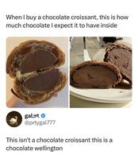

0



NASA's Artemis II crew safely splashed down off the California coast after completing a 10-day trip around the moon and back. "This is not just an accomplishment for NASA," sad NASA Administrator Jared Isaacman. "This is an accomplishment for humanity, again, a historic mission to the moon and back." From a report: Isaacman is aboard the USS John. P Murtha Navy recovery vessel, where the astronauts will be brought once they've been retrieved from the Orion capsule, and he shared "there is a lot to celebrate right now on on a mission well accomplished for Artemis II."
Isaacman also complimented the crew as "absolutely professional astronauts, wonderful communicators and almost poets" "" as well as "ambassadors from humanity to the stars." "I can't imagine a better crew than the Artemis II crew that just completed a perfect mission right now. We are back in the business of sending astronauts to the moon and bringing them back safely.
This is just the beginning. We are going to get back into doing this with frequency, sending missions to the moon until we land on it in 2028 and start building our base." Isaacman also said it's time to start preparing for Artemis III, expected to launch in 2027. You can watch the moment of the splashdown here.
Read more of this story at Slashdot.
Microsoft has started stripping Copilot branding out of Notepad in Windows 11, replacing the old Copilot menu with a more generic "writing tools" label. The AI features themselves aren't going away, but Microsoft seems to be backing off the heavy-handed Copilot branding and extra entry points. Windows Central reports: As promised, Microsoft is now beginning its effort to reduce and remove Copilot branding across Windows 11, with the latest Notepad update for Insiders outright removing the Copilot icon and phrasing. Now, the AI menu is simply called "writing tools," and maintains the same functionality as before. Additionally, Microsoft has also removed references to AI in the Settings area in Notepad. Now, the ability to turn on or off these AI powered writing tools are now listed under "Advanced features."
This change is present in the latest preview build of Notepad which is now rolling out to all Windows Insiders. The app version is 11.2512.28.0, and you'll know you have it if you see the Copilot icon replaced with a pen icon instead. [...] For Notepad, it appears Microsoft has opted to replace the Copilot menu with something more generic. It's still the same functionally, but it's no longer leaning on the tainted Copilot brand. Of course, you can still easily turn off all AI features in Notepad if you don't want them. The Verge reports that the "unnecessary Copilot buttons" are also disappearing from the Snipping Tool, Photos, and Widgets.
Read more of this story at Slashdot.
Futurism found that Google News is surfacing Polymarket betting pages alongside traditional news sources. "The bets often appear in the 'For you' section of Google News, which is tailored to a user's personal interests," the publication reports. "In one instance, it was even the very top result, as with this bet on the price of Bitcoin." From the report: In our testing, Polymarket bets are also showing up on the Google News home page. But links from the prediction market can pop up all over Google News, including in searches. In further tests, looking up "will ships transit the strait," referring to the Strait of Hormuz, returned numerous credible sources like Financial Times, The Guardian, and Reuters. Just below them, however, was a Polymarket bet on the number of ships that would be allowed to pass through the critical oil passageway.
This doesn't appear to be an accident. When searching "Polymarket" in its search bar, Google News now allows users to choose it as a "source," directing them to a page that aggregates other Polymarket hits. It's not the only non-news site that's selectable as a source -- looking up "Reddit" and "X" offers the option, too -- but searching for "Kalshi," another prediction market and Polymarket's main competitor, doesn't give the option to use it as a source. [...] In light of all this, Polymarket appearing in Google News is a major victory for the prediction platform -- rubber-stamping its image as an authority on developing real-world events right alongside genuine real publishers of journalism.
Read more of this story at Slashdot.
France says it plans to move some government computers from Windows to Linux as part of a broader push for digital sovereignty and reduced dependence on U.S. technology. TechCrunch reports: In a statement, French minister David Amiel said (translated) that the effort was to "regain control of our digital destiny" by relying less on U.S. tech companies. Amiel said that the French government can no longer accept that it doesn't have control over its data and digital infrastructure. The French government did not provide a specific timeline for the switchover, or which distributions it was considering. Microsoft did not immediately comment on the news.
[...] France's decision to ditch Windows comes months after the government announced it would stop using Microsoft Teams for video conferencing in favor of French-made Visio, a tool based on the open source end-to-end encrypted video meeting tool Jitsi. The French government said it also plans to migrate its health data platform to a new trusted platform by the end of the year.
Read more of this story at Slashdot.
Meta has started removing ads from law firms seeking clients for social media addiction lawsuits, just weeks after a jury found Meta and YouTube negligent in a landmark case involving harm to a young user. "Lawyers across the country now are seeking new plaintiffs, in the hopes of bringing a class action lawsuit that could result in lucrative verdicts," reports Axios. From the report: Axios has identified more than a dozen such ads that were deactivated today, some of which came from large national firms like Morgan & Morgan and Sokolove Law. Almost all of them ran on both Facebook and Instagram. Some also appeared on Threads and Messenger, plus Meta's Audience Network -- which distributes ads to thousands of third-party sites.
One such ad read: "Anxiety. Depression. Withdrawal. Self-harm. These aren't just teenage phases -- they're symptoms linked to social media addiction in children. Platforms knew this and kept targeting kids anyway." A few of the ads still remain active, including some that were posted earlier today. "We're actively defending ourselves against these lawsuits and are removing ads that attempt to recruit plaintiffs for them," a Meta spokesperson said in a statement. "We will not allow trial lawyers to profit from our platforms while simultaneously claiming they are harmful."
Read more of this story at Slashdot.
An anonymous reader quotes a report from NPR: Women in the U.S. gave birth to roughly 710,000 fewer children last year compared with the nation's peak in 2007, according to preliminary data released (PDF) this week by the Centers for Disease Control and Prevention. Lead researcher Brady Hamilton, a demographer with the CDC's National Center for Health Statistics, said the latest one percent drop in "general fertility" from 2024 to 2025 is part of a long-running downward trend. "Since 2007, there's been a decline in the general fertility rate [in the U.S.] of 23%," Hamilton told NPR.
The impact of that change in real numbers is sizable: In 2007, there were 4,316,233 babies born. Last year, even though the nation's population as a whole is larger, there were only 3,606,400 newborns. There's no consensus over why women and couples have shifted their behavior so significantly. Some experts point to economic factors, others say cultural influences, and better access to education and contraception for women are driving the change.
"We're seeing big drops in fertility rates for young women, teenagers and women in their 20s," said economist Martha Bailey, head of the California Center for Population Research at the University of California, Los Angeles. "What's not yet clear is whether or not those same women will go on to have children later on."
"People are having the number of children they want and that they can afford at a time that makes the most sense for them," she said. "What I don't think anyone is in favor of is a Handmaid's Tale type policy regime, where we're trying to talk families into having children they don't want."
One silver lining in the data is the 7% decline in teen pregnancies in 2025. Bianca Allison, pediatrician and associate professor at the University of North Carolina School of Medicine, said: "What is actually affecting the birth rates are likely lower rates of teen pregnancy overall, which is in the context of higher use of contraception and lower sexual activity for youth, and then also continued access to abortion care."
Read more of this story at Slashdot.
"One of VMware's biggest competitors, Nutanix, claims to have swiped tens of thousands of VMware customers," reports Ars Technica. They said higher prices, forced bundling, licensing changes, and more strained partner relationships have frustrated customers and driven them away from the leading virtualization firm. From the report: Speaking at a press briefing at Nutanix's .NEXT conference in Chicago this week, Nutanix CEO Rajiv Ramaswami said that "about 30,000 customers" have migrated from VMware to the rival platform, pointing to customer disapproval over Broadcom's VMware strategy, SDxCentral, a London-based IT publication, reported today. "I think there's no doubt that the customer sentiment continues to be negative about Broadcom," Ramaswami said, per SDxCentral.
Nutanix hasn't specified how many of the customers that it got from VMware are SMBs or enterprise-sized; although, adoption is said to be strongest among mid-market customers as Nutanix also tries wooing larger customers, often by starting with partial deployments. During this week's press briefing, Ramaswami reportedly said that some of the customers that moved from VMware to Nutanix during the latter's most recent fiscal quarter represented Nutanix's "strongest quarterly new logo additions in eight years." "Most of the logos came from our typical VMware migrations on to the [hyperconverged infrastructure] platform," he said.
During the Nutanix conference, Brandon Shaw, Nutanix VP and head of technology services, said that Western Union has been migrating from VMware to Nutanix for six months, The Register reported. The financial services company is moving 900 to 1,200 applications across 3,900 cores. Shaw said that Western Union has been exploring new IT suppliers to help it become more customer-focused. Despite Broadcom's history of "decent lines of communication" with Western Union, Shaw said that Western Union had "challenges partnering with them."
Shaw also pointed to Broadcom's efforts to push customers to buy the VMware Cloud Foundation (VCF), despite the product often having more features than companies need and at high prices. Since moving to Nutanix, the Denver-headquartered financial firm is also benefiting from having more flexibility around workload locations, which is important since Western Union is in over 200 countries, The Register said.
Read more of this story at Slashdot.
Researchers say the world's largest known wild chimpanzee community in Uganda fractured into rival factions and has been locked in a vicious "civil war" for the last eight years. "It is not clear exactly why the once close-knit community of Ngogo chimpanzees at Uganda's Kibale National Park are at loggerheads, but since 2018 the scientists have recorded 24 killings, including 17 infants," reports the BBC. From the report: [O]ver several decades, [lead author Aaron Sandel] said the nearly 200 Ngogo chimpanzees had lived in harmony. There were divided into two sets - known to researchers as Western and Central - but they had existed overall as a cohesive group. Sandel said he first noticed them polarizing in June 2015, when the Western chimpanzees ran away and were chased by the Central group. "Chimpanzees are sort of melodramatic," he said, explaining that following arguments there would ordinarily be "screaming and chasing" and then later, they would grooming and co-operating.
But following the 2015 dispute, the researchers saw that there was a six-week avoidance period between the two sets, with interactions becoming more infrequent. When they did occur, Sandel said they were "a little more intense, a little more aggressive." Following the emergence of the two distinct groups in 2018, members of the Western group started attacking the Central chimpanzees. In 24 targeted attacks since the split, at least seven adult males and 17 infants from the Central chimps have been killed, the study found, although the researchers believe the actual number of deaths are higher. The researchers believe many factors such as the group size and subsequent competition of resources, and "male-male competition" for reproducing may be to blame.
But they say there were three likely catalysts:
- The first, were the deaths of five adult males and one adult female -- for reasons unknown -- in 2014, which could have disrupted social networks and weakened social ties across the subgroups
- The following year, there was a change in the alpha male, which the study says coincided with the first period of separation between the Western and Central groups. "Changes in the dominance hierarchy can increase aggression and avoidance in chimpanzees," it explained
- The third factor was the deaths of 25 chimpanzees, including four adult males and 10 adult females, as a result of a respiratory epidemic, in 2017, a year before the final separation. One of the adult males who died was "among the last individuals to connect the groups," the research paper said. The study has been published in the journal Science.
Read more of this story at Slashdot.
Bruce66423 shares a report from the Guardian: The European parliament has blocked the extension of a law that permits big tech firms to scan for child sexual exploitation on their platforms, creating a legal gap that child safety experts say will lead to crimes going undetected. The law, which was a carve-out of the EU Privacy Act, was put in place in 2021 as a temporary measure allowing companies to use automated detection technologies to scan messages for harms, including child sexual abuse material (CSAM), grooming and sextortion. However, it expired on April 3, and the EU parliament decided not to vote to extend it, amid privacy concerns from some lawmakers.
The regulatory gap has created uncertainty for big tech companies, because while scanning for harms on their platforms is now illegal, they still remain liable to remove any illegal content hosted on their platforms under a different law, the Digital Services Act. Google, Meta, Snap and Microsoft said they would continue to voluntarily scan their platforms for CSAM, in a joint statement posted on a Google blog. Bruce66423 adds: "Child abuse as the excuse for avoiding privacy protections. Who would have thought it?"
Read more of this story at Slashdot.
An anonymous reader quotes a report from 404 Media: The FBI was able to forensically extract copies of incoming Signal messages from a defendant's iPhone, even after the app was deleted, because copies of the content were saved in the device's push notification database, multiple people present for FBI testimony in a recent trial told 404 Media. The case involved a group of people setting off fireworks and vandalizing property at the ICE Prairieland Detention Facility in Alvarado, Texas in July, and one shooting a police officer in the neck. The news shows how forensic extraction -- when someone has physical access to a device and is able to run specialized software on it -- can yield sensitive data derived from secure messaging apps in unexpected places. Signal already has a setting that blocks message content from displaying in push notifications; the case highlights why such a feature might be important for some users to turn on.
"We learned that specifically on iPhones, if one's settings in the Signal app allow for message notifications and previews to show up on the lock screen, [then] the iPhone will internally store those notifications/message previews in the internal memory of the device," a supporter of the defendants who was taking notes during the trial told 404 Media. [...] During one day of the related trial, FBI Special Agent Clark Wiethorn testified about some of the collected evidence. A summary of Exhibit 158 published on a group of supporters' website says, "Messages were recovered from Sharp's phone through Apple's internal notification storage -- Signal had been removed, but incoming notifications were preserved in internal memory. Only incoming messages were captured (no outgoing)."
404 Media spoke to one of the supporters who was taking notes during the trial, and to Harmony Schuerman, an attorney representing defendant Elizabeth Soto. Schuerman shared notes she took on Exhibit 158. "They were able to capture these chats bc [because] of the way she had notifications set up on her phone -- anytime a notification pops up on the lock screen, Apple stores it in the internal memory of the device," those notes read. The supporter added, "I was in the courtroom on the last day of the state's case when they had FBI Special Agent Clark testifying about some Signal messages. One set came from Lynette Sharp's phone (one of the cooperating witnesses), but the interesting detailed messages shown in court were messages that had been set to disappear and had in fact disappeared in the Signal app." Further reading: Apple Gave Governments Data On Thousands of Push Notifications
Read more of this story at Slashdot.
Gmail's end-to-end encryption is now available on all Android and iOS devices, letting enterprise users send and read encrypted emails directly in the app without any extra tools. "This launch combines the highest level of privacy and data encryption with a user-friendly experience for all users, enabling simple encrypted email for all customers from small businesses to enterprises and public sector," Google announced in a blog post. BleepingComputer reports: Starting this week, encrypted messages will be delivered as regular emails to Gmail recipients' inboxes if they use the Gmail app. Recipients who don't have the Gmail mobile app and use other email services can read them in a web browser, regardless of the device and service they're using.
[...] This feature is now available for all client-side encryption (CSE) users with Enterprise Plus licenses and the Assured Controls or Assured Controls Plus add-on after admins enable the Android and iOS clients in the CSE admin interface via the Admin Console. Gmail's end-to-end encryption (E2EE) feature is powered by the client-side encryption (CSE) technical control, which allows Google Workspace organizations to use encryption keys they control and are stored outside Google's servers to protect sensitive documents and emails.
Read more of this story at Slashdot.
Longtime Slashdot reader fahrbot-bot shares a report from NewScientist: According to quantum chromodynamics (QCD) -- widely considered to be our best theory for describing the strong force, which binds quarks inside protons and neutrons -- even a perfect vacuum isn't truly empty. Instead, it is filled with short-lived disturbances in the underlying energy of space that flicker in and out of existence, known as virtual particles. Among them are quark-antiquark pairs. Under normal conditions, these fleeting pairs vanish almost as soon as they appear. But if enough energy is injected into a vacuum, QCD predicts they can be promoted into real, detectable particles with measurable mass. Now, the STAR collaboration -- an international team of physicists working at the Relativistic Heavy Ion Collider in Brookhaven National Laboratory in New York state -- has observed this process for the first time.
The team smashed together high-energy protons in a vacuum, producing a spray of particles. Some of these particles should be quark-antiquark pairs pulled directly from the vacuum itself, but quarks can never exist alone and immediately combine into composite particles. Quarks and antiquarks are born with their spins correlated -- a shared quantum alignment inherited from the vacuum. The researchers found that this link persists even after the quarks and antiquarks become part of larger particles called hyperons, which decay in less than a tenth of a billionth of a second. Spotting these spin-aligned hyperons in the aftermath of the proton collisions allowed the researchers to confirm that the quarks within them came from the vacuum. The findings have been published in the journal Nature.
Read more of this story at Slashdot.
BrianFagioli writes: Mozilla is accusing Microsoft of stacking the deck against Firefox, arguing that design choices in Windows steer users toward Edge even when they explicitly choose another browser. According to Mozilla, parts of Windows still open links in Edge regardless of the default browser setting, including results from the taskbar search and links launched from apps like Outlook and Teams. Mozilla says this means Firefox often never even gets the opportunity to handle those links, which quietly shifts user activity back into Microsoft's ecosystem.
The company also points to Microsoft's aggressive rollout of Copilot as another example of platform power being used to push Microsoft services. Copilot appeared pinned to the taskbar, arrived automatically on many systems with Microsoft 365, and even received a dedicated keyboard key on some laptops. Mozilla argues that when the maker of the dominant desktop operating system promotes its own browser and AI tools at the system level, it becomes far harder for independent browsers like Firefox to compete.
Read more of this story at Slashdot.
San Francisco police arrested a suspect after a Molotov cocktail was allegedly thrown at Sam Altman's home and threats were later made outside OpenAI's headquarters. "Thankfully, no one was hurt," said OpenAI in a statement to WIRED. "We deeply appreciate how quickly SFPD responded and the support from the city in helping keep our employees safe. The individual is in custody, and we're assisting law enforcement with their investigation." From the report: "At approximately 3:45am PT, an unidentified individual approached Sam's residence and threw an incendiary device toward the property. The device landed nearby and extinguished. There were no injuries and only minimal damage was reported," the message to staff reads. "Shortly afterward, an individual matching the suspect's description was contacted by security outside MB1," the message continues, referring to OpenAI's headquarters in San Francisco's Mission Bay neighborhood. "This person made threatening statements about the building."
OpenAI's corporate security team told staff it is cooperating with law enforcement on an investigation, and that employees may notice an increased police and security presence around the office on Friday. The security team said that the company's offices remain open, but employees were advised to "not let anyone tailgate into the building." UPDATE: Sam Altman has responded to the incident.
Read more of this story at Slashdot.
An anonymous reader quotes a report from The Drive: An auto dealer software company is pitching AI-powered kiosks designed to replace car salesmen on showroom floors. Automotive News says the industry is "skeptical." But be honest -- would you really rather deal with the average car lot shark than a computer?
Epikar, a South Korean company that cooks up digital management solutions for car dealers, has named its new AI invention the Pikar Genie. The idea is that customers can talk to this device, ask it product questions, and basically do everything you'd do with a car salesman except for actually closing the deal and signing paperwork. Renault, BMW, and Volvo are already using some Epikar products at South Korean dealerships, but this new customer-facing AI product is still in its infancy.
AN reported that "Renault assigns three salespeople to its Seoul showroom enhanced with Epikar automation compared with six for other Renault showrooms in South Korea," according to Epikar CEO Bosuk Han. The company's now looking to expand into America and is apparently already testing its products at at least one dealership stateside. Car-dealer consultant Fleming Ford (Director of Strategic Growth at NCM Associates) said U.S. dealerships "aren't ready for fully automated showrooms."
"The showroom isn't just where you buy a car," Automotive News quoted him saying. "It's where you decide who to trust to help you to choose the right car."
Read more of this story at Slashdot.
Jack Queen / Reuters : The US CFTC says a district court judge granted its request for a temporary restraining order barring Arizona from continuing its criminal case against Kalshi — A federal judge on Friday blocked Arizona from continuing its criminal case against prediction market Kalshi …
Wall Street Journal : Sources: US National Cyber Director Sean Cairncross is leading an effort to identify security vulnerabilities in critical infrastructure that AI could exploit — Group led by National Cyber Director Sean Cairncross aims to identify security vulnerabilities before models from Anthropic, OpenAI are released
Reuters : Report: Canada's Cohere and Germany's Aleph Alpha are in talks to merge; the German government would be willing to become a key customer of a combined company — Artificial intelligence companies Cohere of Canada and Aleph Alpha of Germany are in talks to merge and have Berlin's support …
Sam Altman : Sam Altman reflects on the attack on his house, OpenAI's success, personal regrets, and advocates for de-escalating rhetoric and tactics in the AI industry — Here is a photo of my family. I love them more than anything. — Images have power, I hope. Normally we try to be pretty private …
Michael Kan / PCMag : Amazon Luna is dropping support for game purchases and third-party game stores and subscriptions; previously purchased games will be accessible until June 10 — The Luna game-streaming service is getting an overhaul, with Amazon pulling the plug on game purchases and hosting third-party game stores and subscriptions.
Bloomberg : Blackstone files for an IPO of a new data center acquisition vehicle to buy already-built and leased properties, and, sources say, plans to raise ~$2B — Blackstone Inc. filed for an initial public offering of a new data-center acquisition vehicle that plans to buy already-built …
The Information : Sources: Cisco is in talks to acquire Tel Aviv-based Astrix Security, which sells software to monitor and secure AI agents, for between $250M and $350M — Cisco Systems is in talks to acquire Astrix Security, a five-year-old Israeli cybersecurity startup that sells software to monitor and secure AI agents …
Reuters : Tesla says Dutch regulators approved the use of its full self-driving software, marking the first regulatory sign-off for the feature in Europe — Tesla (TSLA.O) on Friday said Dutch regulators had approved the use of its driver assistance software which handles most driving tasks on highways …
Bloomberg : Sources: Goldman Sachs, Citigroup, and other banks are testing Anthropic's Mythos model internally; JPMorgan Chase is the only bank named in Project Glasswing — Wall Street banks are starting to test Anthropic PBC's Mythos model internally as Trump administration officials encourage them to use it to detect vulnerabilities.
Samantha Subin / CNBC : Sources: a week before Mythos release, JD Vance and Scott Bessent questioned Amodei, Altman, and others about AI model security and responding to cyber attacks — Vice President JD Vance and Treasury Secretary Scott Bessent last week questioned leading tech CEOs about the security …
Shaurya Malwa / CoinDesk : Analysis: Trump's World Liberty Financial used 5B of its WLFI tokens to borrow $75M from a platform its adviser co-founded; WLFI falls to an all-time low — Onchain data shows WLFI deposited 5 billion of its own tokens as collateral to borrow stablecoins it then sent to Coinbase Prime …
Ryan Devereaux / The Intercept : Source: federal prosecutors have subpoenaed Reddit to appear before a grand jury, to provide personal data on an anonymous user who criticized ICE — An ICE summons to get the user's identity failed. Advocates worry the move to a grand jury signals an escalation of the war on dissent.
Ed Bott / ZDNET : Microsoft unveils plans to streamline the Windows Insider program, offering a simplified channel structure, moving between channels without wiping PCs, and more — ZDNET's key takeaways — Microsoft is making the Insider Program less complicated. — Beta channel will be a more reliable preview of the next retail release.
Joe Miller / Financial Times : Trump hails Palantir's “great war fighting capabilities”, days after short seller Michael Burry said the company will lose to AI startups; PLTR is down ~25% YTD — US president's endorsement follows criticism from famed investor Michael Burry — Shares in Palantir rose on Friday …
Anissa Gardizy / The Information : Three senior executives who helped launch OpenAI's Stargate initiative are leaving, sources say to join the same new company — Three senior OpenAI executives who helped launch the company's original Stargate data center initiative have left or are preparing to depart the ChatGPT maker in the coming days …